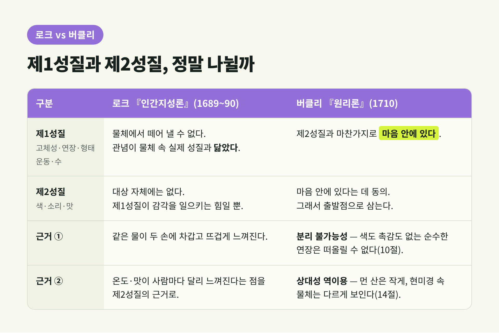
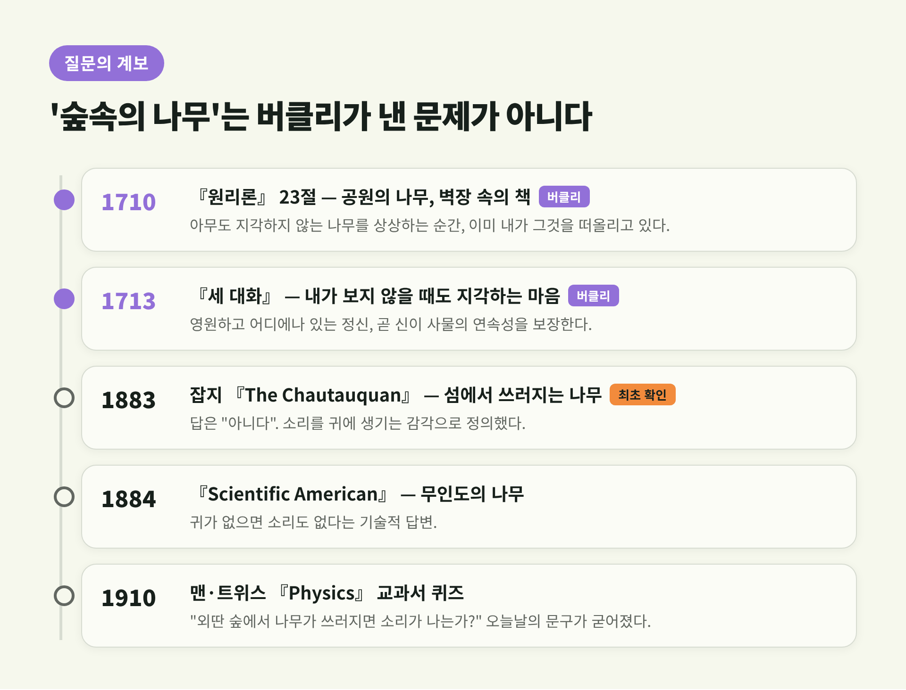
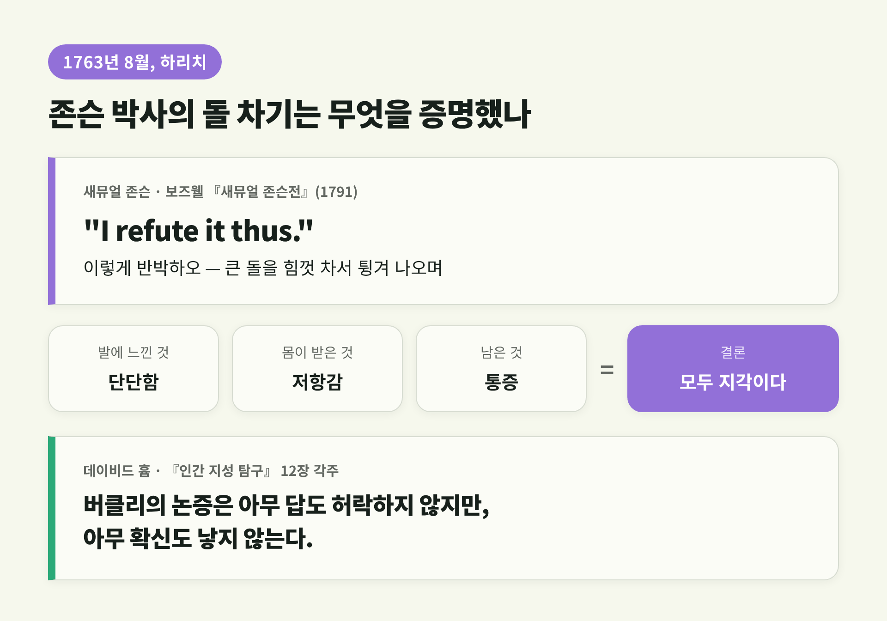
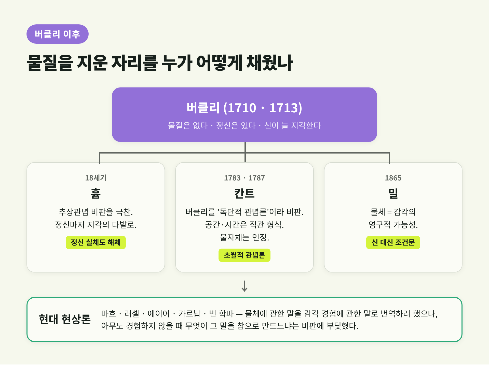

버클리 관념론 — '존재는 지각되는 것'의 진짜 뜻과 반박이 어려운 이유

오늘은 조지 버클리의 관념론을 정리해 보려 합니다. "존재는 지각되는 것이다(esse est percipi)"라는 짧은 문장이 무엇을 주장하고, 무엇을 주장하지 않는지가 이 글의 중심입니다.
먼저 요점 세 가지입니다.
- 버클리가 부정한 것은 돌과 나무가 아니라, 지각과 무관하게 존재한다는 철학자들의 '물질'이라는 개념입니다.
- 그는 로크의 제1성질·제2성질 구분과 추상관념 이론을 무너뜨려 이 결론에 도달했습니다.
- 존슨 박사의 돌 차기가 반박이 되지 못하는 까닭도, 발끝의 아픔 역시 결국 지각이기 때문입니다.
■ 스물다섯 무렵에 쓴 한 문장
버클리는 1685년 아일랜드 킬케니 근처에서 태어났습니다. 열다섯에 더블린 트리니티 칼리지에 들어갔고, 1707년 펠로우가 된 뒤 곧 사제 서품을 받았습니다.
핵심 저작은 짧은 기간에 몰려 있습니다. 1709년 『시각 신이론』, 1710년 『인간 지식의 원리론』, 1713년 『하일라스와 필로누스의 세 대화』입니다. 『원리론』을 낼 때 그는 아직 20대 중반이었습니다.
『원리론』의 정식 부제는 이 책의 의도를 숨기지 않습니다. 학문에서 생기는 오류와 난점의 주된 원인, 그리고 회의론·무신론·무종교의 근거를 탐구한다는 것입니다. 버클리는 세상을 흔들려던 것이 아니라, 회의론을 막으려 했던 셈입니다.
그 문장은 『원리론』 3절에 나옵니다. 감각되는 사물에 대해 "그것들의 존재(esse)는 지각되는 것(percipi)"이라고 썼습니다. 예시도 소박합니다. 내가 글을 쓰는 탁자가 존재한다는 말은, 내가 그것을 보고 만진다는 뜻이라는 것입니다.
정확한 공식은 조금 더 깁니다. "존재는 지각되는 것, 또는 지각하는 것(esse est percipi aut percipere)." 지각되는 쪽은 관념이고, 지각하는 쪽은 정신입니다. 버클리에게 세계는 이 두 가지로 이루어져 있습니다.
■ 로크의 두 성질 구분을 허물다
출발점은 존 로크였습니다. 로크는 『인간지성론』(1689~90)에서 물체의 성질을 둘로 나눴습니다.
제1성질은 고체성, 연장, 형태, 운동과 정지, 수입니다. 물체가 어떤 상태에 있든 떼어 낼 수 없는 성질이라고 했습니다. 제2성질은 색, 소리, 맛 같은 것입니다. 로크는 이것들이 "실은 대상 자체에는 아무것도 아닌" 성질이며, 제1성질이 우리 안에 감각을 일으키는 힘일 뿐이라고 보았습니다.
로크가 든 예가 유명합니다. 한 손은 얼음물에, 다른 손은 뜨거운 물에 담갔다가 같은 물에 넣으면 한쪽은 차갑고 한쪽은 뜨겁게 느낍니다. 같은 물이 동시에 차갑고 뜨거울 수는 없으니, 온도 감각은 물이 아니라 우리 안에 있다는 것입니다. 이런 구분은 갈릴레이의 『시금자』(1623)와 보일(1666)로 이어지는 기계론 과학의 상식이기도 했습니다.
버클리는 이 구분을 두 방향에서 공격했습니다.
첫째는 분리 불가능성입니다. 색도 촉감도 없는 순수한 연장이나 형태를 떠올려 보라는 것입니다. 『원리론』 10절은 연장·형태·운동을 다른 모든 성질에서 떼어 내면 생각할 수 없다고 말합니다. 제2성질이 마음 안에 있다면, 그것과 떨어질 수 없는 제1성질도 함께 마음 안에 있어야 합니다.
둘째는 상대성 논증의 역이용입니다. 로크가 온도와 맛에 쓴 논증은 크기와 모양에도 그대로 통합니다. 멀리 있는 산은 작게 보이고, 현미경은 같은 물체의 모양을 바꿔 보여 줍니다. 버클리는 14절에서 묻습니다. 그렇다면 운동 역시 마음 밖에 있지 않다고 말하는 것이 똑같이 합리적이지 않으냐고요.

■ 추상관념이라는 뿌리를 뽑다
버클리는 오류의 뿌리를 '추상관념'에서 찾았습니다. 『원리론』의 서론 전체가 이 문제에 바쳐져 있습니다.
로크는 개별 사물에서 특수한 성질을 벗겨 내면 일반 관념이 남는다고 보았습니다. 버클리는 로크 자신의 삼각형 설명을 인용합니다. 삼각형의 일반 관념은 빗각도 직각도 아니고, 정삼각형도 이등변도 부등변도 아니면서, 동시에 그 모두여야 한다는 것입니다.
버클리는 이것을 모순으로 보았습니다. 서론 10절에서 그는 어떤 사고의 노력으로도 그런 관념을 떠올릴 수 없다고 고백합니다. 우리가 실제로 떠올리는 것은 언제나 특정한 크기와 모양의 삼각형이고, 그것이 다른 삼각형들을 대표할 뿐입니다.
이것이 왜 중요할까요. 지각과 분리된 '물질 일반', '순수한 연장' 같은 개념이 바로 추상관념이기 때문입니다. 추상관념이 불가능하다면, 감각 성질을 모두 벗겨 낸 물질이라는 개념도 함께 무너집니다. 『원리론』 9절이 물질 개념은 그 자체로 모순을 품고 있다고 말하는 이유입니다.
이 대목은 후대에 높이 평가받았습니다. 흄은 『인성론』에서 버클리의 추상관념 비판을 최근 이루어진 가장 위대하고 가치 있는 발견 중 하나라고 불렀습니다.
■ 숲속에서 쓰러지는 나무와 신의 지각
여기서 누구나 떠올리는 질문이 있습니다. 아무도 없는 숲에서 나무가 쓰러지면 소리가 날까요.
먼저 짚어 둘 사실이 있습니다. 이 질문은 버클리가 쓴 것이 아닙니다. 지금까지 확인된 가장 이른 형태는 1883년 잡지 『The Chautauquan』에 실린 섬의 나무 문제이고, 이듬해 『Scientific American』도 비슷한 질문을 다뤘습니다. 지금 우리가 아는 문구는 1910년 맨과 트위스의 물리 교과서 퀴즈에서 굳어진 것으로 보입니다. 그때의 쟁점은 철학보다 '소리'의 정의였습니다.
버클리가 실제로 다룬 것은 『원리론』 23절의 '공원의 나무'와 '벽장 속의 책'입니다. 아무도 지각하지 않는 공원의 나무를 상상하는 것만큼 쉬운 일은 없어 보입니다. 그러나 그렇게 상상하는 동안 바로 당신이 그 나무를 떠올리고 있습니다. 생각되지 않은 채 존재하는 것을 생각한다는 것 자체가 모순이라는 주장입니다. 흔히 '마스터 논증'이라 부릅니다.
솔직히 이 논증은 약점이 뚜렷합니다. 떠올리는 행위와 떠올린 대상을 혼동했다는 비판이 대표적이고, 많은 연구자가 버클리의 최고 논증은 아니라고 봅니다. 다만 지각되지 않는 상태를 우리가 경험해 본 적이 없으니 표상할 수 없다는 호의적 재구성도 있습니다.
그렇다면 아무도 보지 않는 나무는 사라질까요. 『세 대화』의 필로누스는 아니라고 답합니다. 내가 지각하지 않는 동안에도 그것들이 존재하는 다른 마음이 있고, 그 마음은 영원하고 어디에나 있는 정신, 곧 신이라는 것입니다. 『원리론』에는 적절한 조건에 놓이면 내가 지각할 것이라는 반사실적 설명도 함께 등장합니다.
이 해법을 두고 로널드 녹스는 짧은 풍자시를 남겼습니다. 아무도 없는 안뜰에서 나무가 계속 존재한다면 신이 참 이상하게 여기겠다는 내용입니다. 익명의 답시는 신의 목소리로 "나는 늘 안뜰에 있다"고 응수했습니다.

■ 존슨 박사의 돌 차기는 왜 반박이 아닌가
가장 유명한 '반박'은 1763년 8월, 영국 항구 하리치에서 나왔습니다. 보즈웰의 『새뮤얼 존슨전』(1791)에 따르면, 두 사람은 교회에서 나와 버클리 주교의 "기발한 궤변"을 이야기하고 있었습니다. 존슨은 큰 돌에 힘껏 발을 부딪쳐 튕겨 나오며 말했습니다. "이렇게 반박하오(I refute it thus)."
통쾌한 장면이지만, 논증으로는 과녁을 빗나갑니다. 존슨이 얻은 것은 돌의 단단함, 발의 저항감, 발가락의 통증입니다. 모두 지각입니다. 지각을 아무리 보태도 지각 너머의 물질이 증명되지는 않습니다.
돌 차기가 보여 주는 것은 돌이 환각이 아니라는 사실 정도입니다. 그런데 버클리도 그 점은 부정한 적이 없습니다. 그에게 실재하는 사물이란 내 의지와 상관없이 주어지고, 상상보다 강하고 생생하며, 일정한 질서를 따르는 감각 관념이기 때문입니다. 『원리론』 29절의 말처럼, 환한 대낮에 눈을 뜨면 볼지 말지를 내가 고를 수 없습니다.
그렇다고 존슨 편의 직관이 아무 힘도 없는 것은 아닙니다. 철학자 레이먼드 탤리스는 범위를 넓히면 이야기가 달라진다고 봅니다. 우리 몸의 장기는 지각되지 않아도 작동하고, 보즈웰이 훗날 그 장면을 기억한 것 자체가 지각을 넘어선 연속적 신체를 전제한다는 것입니다.
흄의 평가가 이 상황을 가장 잘 요약합니다. 그는 『인간 지성 탐구』의 각주에서 버클리의 논증들이 "아무 답도 허락하지 않지만, 아무 확신도 낳지 않는다"고 썼습니다.

■ 흄, 칸트, 그리고 현상론으로
버클리 이후의 흐름은 그의 결론을 어디까지 밀고 가느냐의 역사였습니다.
흄은 버클리의 방법을 정신에까지 적용했습니다. 버클리는 물질 실체는 버렸지만 정신 실체는 지켰습니다. 흄은 정신마저 지각들의 다발로 보는 쪽으로 나아갔습니다. 흥미롭게도 버클리의 초기 노트에는 이미 비슷한 발상이 있었지만, 그는 출간작에서 이를 발전시키지 않았습니다.
칸트는 버클리와 같은 부류로 묶이는 것을 몹시 경계했습니다. 1782년 괴팅겐 서평이 자신의 철학을 버클리와 비슷하다고 평하자, 『형이상학 서설』(1783)과 『순수이성비판』 재판(1787)에서 선을 그었습니다. 그는 버클리를 '독단적 관념론'으로 분류하고, 물체를 한갓 가상으로 격하했다고 비판했습니다. 칸트 자신은 공간과 시간을 우리 직관의 형식으로 보면서도, 알 수는 없지만 물자체는 인정했습니다. 다만 칸트가 버클리를 정확히 읽었는지는 지금도 연구자들 사이에서 논쟁거리입니다.
19세기에는 존 스튜어트 밀이 신 없는 버전을 내놓았습니다. 1865년 『해밀턴 철학 검토』에서 그는 물체를 "감각의 영구적 가능성"이라고 정의했습니다. 아무도 보지 않는 나무는, 누군가 그 자리에 가면 보게 될 조건부 가능성으로 존재한다는 것입니다.
예전엔 신의 지각이 세계의 연속성을 떠받쳤습니다. 이제는 조건문이 그 역할을 맡았습니다.
이 생각은 마흐, 러셀, 에이어, 카르납과 빈 학파의 현상론으로 이어졌습니다. 물체에 관한 말을 실제 또는 가능한 감각 경험에 관한 말로 번역하려는 시도입니다. 하지만 지각의 상대성 문제, 그리고 아무도 경험하지 않을 때 무엇이 그 조건문을 참으로 만드느냐는 비판에 부딪혔습니다. 버클리가 신으로 메운 빈자리가 다시 드러난 셈입니다.

■ 흔히 하는 오해 세 가지
유아론이 아닙니다. 유아론은 나의 마음만 확실히 존재한다는 입장입니다. 버클리는 여러 유한한 정신과 신을 인정합니다. 감각 관념이 내 뜻대로 바뀌지 않는다는 사실 자체가 나 아닌 정신이 있다는 근거였습니다. 물론 신에 기대는 이 대목이 논점을 미리 깔고 들어간다는 비판은 피하기 어렵습니다.
상식을 부정하려던 것이 아닙니다. 『세 대화』의 필로누스는 세상의 상식에 호소하겠다고 말합니다. 『원리론』 35절은 감각이나 반성으로 파악할 수 있는 어떤 것의 존재도 부정하지 않는다고 못 박습니다. 부정하는 것은 오직 철학자들이 '물질' 또는 '물체적 실체'라 부르는 것뿐입니다. 51절의 조언처럼, 학자처럼 생각하되 대중처럼 말하면 됩니다. "불이 데운다"는 말을 계속 써도 괜찮습니다.
세계가 꿈이라는 말도 아닙니다. 33절은 자연의 창조자가 감각에 새긴 관념을 '실재하는 사물'이라 부릅니다. 버클리에게 탁자는 여전히 단단하고, 불은 여전히 뜨겁습니다. 달라지는 것은 그 단단함 뒤에 보이지 않는 무언가를 하나 더 세우지 않는다는 점뿐입니다.
■ 왜 지금도 반박하기 어려운가
이유는 단순합니다. 우리가 세계에 대해 내놓을 수 있는 증거는 결국 보고, 듣고, 만진 것입니다. 지각 너머의 물질을 증명하려면 지각 너머로 나가야 하는데, 그 길은 누구에게도 열려 있지 않습니다.
그렇다고 버클리가 이긴 것도 아닙니다. 그의 체계는 신이라는 무거운 기둥에 기대고 있고, 마스터 논증은 허술하다는 평가를 받습니다. 아직 완결된 답은 없습니다.
정리하면 이렇습니다. 버클리는 사물을 없애려 한 것이 아니라, 사물 뒤에 덧붙여 둔 '보이지 않는 물질'이라는 가정을 걷어 내려 했습니다.
— 반박하기 어려운 까닭은 그의 주장이 이상해서가 아니라, 우리의 증거가 모두 지각이기 때문입니다.
오늘 저녁 창밖의 나무가 거기 있다고 믿는 근거가 무엇이냐고 물으신다면, 저는 잠시 망설이게 될 것 같습니다.
참고자료
- Stanford Encyclopedia of Philosophy, "George Berkeley" — https://plato.stanford.edu/entries/berkeley/
- Stanford Encyclopedia of Philosophy, "Primary and Secondary Qualities in Early Modern Philosophy" — https://plato.stanford.edu/entries/qualities-prim-sec/
- Stanford Encyclopedia of Philosophy, "Kant's Transcendental Idealism" Supplement — https://plato.stanford.edu/entries/kant-transcendental-idealism/supplement1.html
- Internet Encyclopedia of Philosophy, "George Berkeley" — https://iep.utm.edu/berkeley/
- George Berkeley, A Treatise Concerning the Principles of Human Knowledge (1734년판, TCD 디지털본) — https://www.maths.tcd.ie/~dwilkins/Berkeley/HumanKnowledge/1734/HumKno.pdf
- Three Dialogues between Hylas and Philonous, Third Dialogue (LibreTexts, Bennett 판) — https://human.libretexts.org/Bookshelves/Philosophy/Miscellaneous_Philosophy_Topics/George_Berkeley_-%22The_Principles_of_Human_Knowledge%22(Bennett)/03:_Three_Dialogues_between_Hylas_and_Philonous_1713/3.03:_Third_Dialogue
- Wikipedia, "If a tree falls in a forest and no one is around to hear it, does it make a sound?" — https://en.wikipedia.org/wiki/If_a_tree_falls_in_a_forest_and_no_one_is_around_to_hear_it,_does_it_make_a_sound%3F
- Wikipedia, "Phenomenalism" — https://en.wikipedia.org/wiki/Phenomenalism
- Routledge Encyclopedia of Philosophy, "Mill, John Stuart — Mind and matter" — https://www.rep.routledge.com/articles/biographical/mill-john-stuart-1806-73/v-1/sections/mind-and-matter
- Hume Texts Online, An Enquiry concerning Human Understanding, Section 12 — https://davidhume.org/texts/e/12
- UC Davis, Notes on Hume's Treatise 1.1.7 — https://hume.ucdavis.edu/phi174/tb1p1s7.html
- UC Davis, Kant Lexicon "Idealism" — https://hume.ucdavis.edu/kant/IDEALISM.HTM
- Philosophy Now, Raymond Tallis, "I refute it thus" — https://philosophynow.org/issues/165/I_refute_it_thus
- Ask a Philosopher, "When Dr Johnson kicked the stone" — https://askaphilosopher.org/2015/10/13/when-dr-johnson-kicked-the-stone/
- VQR, "James Boswell and Samuel Johnson: The Original Odd Couple" — https://www.vqronline.org/history/james-boswell-and-samuel-johnson-original-odd-couple
- Hobart and William Smith Colleges, Locke's Essay 강의노트 — https://people.hws.edu/gfrost-arnold/MMSLecture14.htm
- Commonplace Fun Facts, "George Berkeley on God in the Quad" — https://commonplacefacts.com/2022/03/25/george-berkeley-god-in-the-quad/